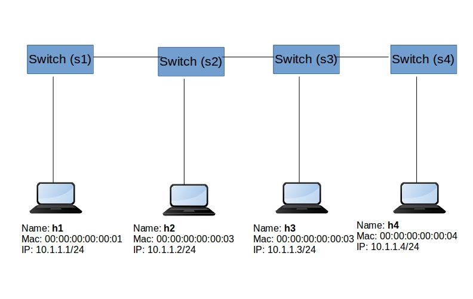

Group Table
Version: 1.0.1
KNET Solutions (Online Training Centre),
Phone/WhatsApp: +919445042007
we provide Academic SDN Project assistance/guidance.
Group Table1. IntroductionGroup table ComponentsALL GroupSELECT Group2. Demo -SnifferObjectiveSteps3. Demo - Multipath LoadbalancerObjectiveSteps4. References
1. Introduction
The ability for a flow entry to point to a group enables OpenFlow to represent additional methods of forwarding (e.g. select and all).
OpenFlow groups were introduced in OpenFlow 1.1 as a way to perform more complex operations on packets that cannot be defined within a flow alone.
There are different types of groups defined in the OpenFlow specification to serve a variety of purposes
Example usecases :
1) Sniffing/Port mirroring
2) Load balancing
3) fast-failovers to alternative links
Group table Components

- Group contains a bucket list
- Bucket - it contains separate lists of actions, and parameters
- Each bucket or list of buckets can be applied to entering packets; the exact behavior depends on the group type
- There are four types of groups – ALL, SELECT, INDIRECT, and FAST-FAILOVER.
ALL Group
ALL group, will take any packet received as input and duplicate it to be operated on independently by each bucket in the bucket list. In this way, an ALL group can be used to replicate and then operate on separate copies of the packet defined by the actions in each bucket.
Example usecase: Port Mirror
SELECT Group
SELECT group, which is primarily designed for load balancing
SELECT group has an assigned weight, and each packet that enters the group is sent to a single bucket. The bucket selection algorithm is undefined and is dependent on the switch’s implementation;
Example usecase: Load Balancer
2. Demo -Sniffer
Objective

Make h2 as Sniffer machine. it will sniff all the packets passing via S2.
Steps
- run the topology in mininiet
xxxxxxxxxxsudo mn --controller=remote,ip=127.0.0.1 --mac -i 10.1.1.0/24 --switch=ovsk,protocols=OpenFlow13 --topo=linear,4
- Run the ryu controller application(simple switch and ofctl)
xxxxxxxxxxryu-manager ryu.app.simple_switch_13 ryu.app.ofctl_rest
- Do pingall from mininiet
xxxxxxxxxxmininet> pingall*** Ping: testing ping reachabilityh1 -> h2 h3 h4h2 -> h1 h3 h4h3 -> h1 h2 h4h4 -> h1 h2 h3*** Results: 0% dropped (12/12 received)mininet>
- Check the flows of switch s2
xxxxxxxxxxsudo ovs-vsctl showsudo ovs-ofctl -O OpenFlow13 dump-flows s2sudo ovs-ofctl -O OpenFlow13 dump-groups s2
- Configure the Group in S2
Group table1(Group Table ID 50):
Create a Group table with TYPE=ALL(it means, copy a packet for each bucket. and each bucket will be processed). create two buckets. one bucket will send the packet to Port3, another bucket will send the packet to Port1
Group table2(Group ID 51):
Create a Group table with TYPE=ALL(it means, copy a packet for each bucket. and each bucket will be processed). create two buckets. one bucket will send the packet to Port2, another bucket will send the packet to Port1
Method: POST URI: /stats/groupentry/add
curl -X POST http://localhost:8080/stats/groupentry/add -d '@group50.json'
curl -X POST http://localhost:8080/stats/groupentry/add -d '@group51.json'
Check the group tables
xxxxxxxxxxsuresh@suresh-vm:~$ sudo ovs-ofctl -O OpenFlow13 dump-groups s2OFPST_GROUP_DESC reply (OF1.3) (xid=0x2):group_id=50,type=all,bucket=actions=output:"s2-eth1",bucket=actions=output:"s2-eth2"group_id=51,type=all,bucket=actions=output:"s2-eth1",bucket=actions=output:"s2-eth3"suresh@suresh-vm:~$
- Configure the Flows
- All the packets received from port3 will be forwarded to Group table1(Group table ID 50)
- All the packets received from port2 will be forwarded to Group table2(Group table ID 51)
curl -X POST http://localhost:8080/stats/flowentry/add -d '@flow1.json'
curl -X POST http://localhost:8080/stats/flowentry/add -d '@flow2.json'
Check the flow tables
xxxxxxxxxxsuresh@suresh-vm:~$ sudo ovs-ofctl -O OpenFlow13 dump-flows s2cookie=0x0, duration=51.164s, table=0, n_packets=8, n_bytes=784, priority=100,in_port="s2-eth3" actions=group:50cookie=0x0, duration=18.320s, table=0, n_packets=6, n_bytes=588, priority=100,in_port="s2-eth2" actions=group:51....OUTPUT skipped
Now newly added flows have high priority. So this will take control of forwarding the packets.
- Testing
Trigger a continuos ping from h1 to h4 and capture traffic in h2 using tcpdump
a) start the xterm for h2
mininet> xterm h2
In the h2 terminal capture tcpdump
tcpdump -i any -v
b) continuous ping from h1 to h4
xxxxxxxxxxmininet> h1 ping h4PING 10.1.1.4 (10.1.1.4) 56(84) bytes of data.64 bytes from 10.1.1.4: icmp_seq=1 ttl=64 time=2.15 ms64 bytes from 10.1.1.4: icmp_seq=2 ttl=64 time=0.080 ms
c) check the h2 xterm window, you will observe the h1 to h4 traffic
d)
check the group stats
xxxxxxxxxxsuresh@suresh-vm:~$ sudo ovs-ofctl -O OpenFlow13 dump-group-stats s2OFPST_GROUP reply (OF1.3) (xid=0x4):group_id=50,duration=1171.522s,ref_count=1,packet_count=223,byte_count=20790,bucket0:packet_count=223,byte_count=20790,bucket1:packet_count=223,byte_count=20790group_id=51,duration=1119.832s,ref_count=1,packet_count=219,byte_count=20510,bucket0:packet_count=219,byte_count=20510,bucket1:packet_count=219,byte_count=20510suresh@suresh-vm:~$
3. Demo - Multipath Loadbalancer
Objective
Forward the packet to 1 bucket(out of N buckets) and process it. (Load Balancer)

Steps
- run the topology in mininiet
xxxxxxxxxxsudo python topo.py
- Run the ryu manager ofctl application
xxxxxxxxxxryu-manager ryu.app.ofctl_rest
- Add the static ARP Entry in the mininiet hosts
xxxxxxxxxxmininet> h1 arp -s 192.168.1.2 00:00:00:00:00:02mininet> h2 arp -s 192.168.1.1 00:00:00:00:00:01
- add the flow entries for s2,s3,s4 (it simple, receive one end forward other side)
curl -X POST http://localhost:8080/stats/flowentry/add -d '@s2_flow1.json'
curl -X POST http://localhost:8080/stats/flowentry/add -d '@s2_flow2.json'
curl -X POST http://localhost:8080/stats/flowentry/add -d '@s3_flow1.json'
curl -X POST http://localhost:8080/stats/flowentry/add -d '@s3_flow2.json'
curl -X POST http://localhost:8080/stats/flowentry/add -d '@s4_flow1.json'
curl -X POST http://localhost:8080/stats/flowentry/add -d '@s4_flow2.json'
Verify the flows
xxxxxxxxxxsudo ovs-ofctl -O OpenFlow13 dump-flows s2sudo ovs-ofctl -O OpenFlow13 dump-flows s3sudo ovs-ofctl -O OpenFlow13 dump-flows s4
- Add Group table for S1
Create a Group table with TYPE=SELECT (it means, For each bucket, a bucket will be selected (based on weight - vendor implementation ). and the selected bucket will be processed).
create two buckets. one bucket will send the packet to S2 Port, another bucket will send the packet to S3 Port
curl -X POST http://localhost:8080/stats/groupentry/add -d '@s1_group50.json'
verify the group table
xxxxxxxxxxsudo ovs-ofctl -O OpenFlow13 dump-groups s1
- Add Group table for S5
Create a Group table with TYPE=SELECT (it means, For each bucket, a bucket will be selected (based on weight - vendor implementation ). and the selected bucket will be processed).
create two buckets. one bucket will send the packet to S4 Port, another bucket will send the packet to S3 Port.
curl -X POST http://localhost:8080/stats/groupentry/add -d '@s5_group51.json'
verify the group table
xxxxxxxxxxsudo ovs-ofctl -O OpenFlow13 dump-groups s5
- Add flows for S1
curl -X POST http://localhost:8080/stats/flowentry/add -d '@s1_flow1.json'
curl -X POST http://localhost:8080/stats/flowentry/add -d '@s1_flow2.json'
curl -X POST http://localhost:8080/stats/flowentry/add -d '@s1_flow3.json'
- Add flows for S5
curl -X POST http://localhost:8080/stats/flowentry/add -d '@s5_flow1.json'
curl -X POST http://localhost:8080/stats/flowentry/add -d '@s5_flow2.json'
curl -X POST http://localhost:8080/stats/flowentry/add -d '@s5_flow3.json'
- Testing
Verify the flows
xxxxxxxxxxsudo ovs-ofctl -O OpenFlow13 dump-flows s1sudo ovs-ofctl -O OpenFlow13 dump-flows s2sudo ovs-ofctl -O OpenFlow13 dump-flows s3sudo ovs-ofctl -O OpenFlow13 dump-flows s4sudo ovs-ofctl -O OpenFlow13 dump-flows s5
run iperf test between h1 and h5
xxxxxxxxxxmininet> h2 iperf -u -s &mininet> h2 iperf -s &mininet> h1 iperf -c h2 -t 60 -P 5 &
Check the flows and groups.
4. References
Theory about group table
https://ryu.readthedocs.io/en/latest/app/ofctl_rest.html#add-a-group-entry
RYU Example
https://github.com/wildan2711/multipath/blob/master/ryu_multipath.py